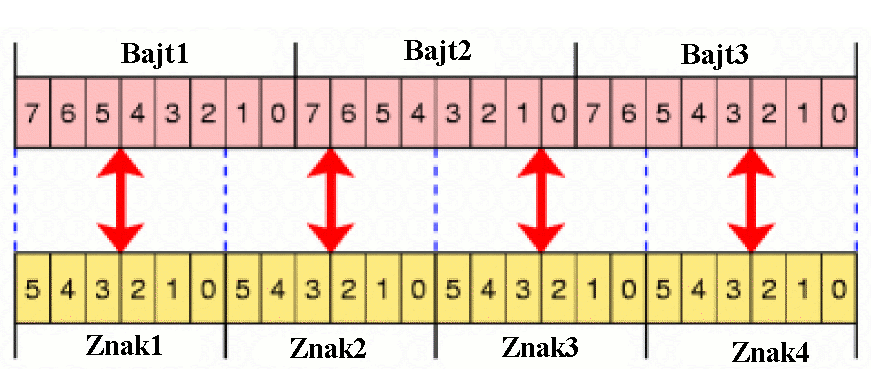

Base64 jest g³ównie u¿ywany do za³¹czników w emailach.
Base64 jest procedur¹ kodowania reprezentacji binarnej danych w formie znaków drukowalnych.
Base64 nie szyfruje: Nie u¿ywa klucza, i za ka¿dym razem, kiedy tekst jawny jest kodowany przez base64 doprowadza do takiego samego wyniku.
Base64 koduje ka¿de 3 bajty danych binarnych (na podstawie tabeli kodowania base64) na 4 bajty danych znakowy, z których wszystkie s¹ drukowalne, jako rezultat plik jest 33% wiêkszy.
G³ównym zakresem u¿ycia jest e-mailowy standard MIME, w celu wysy³ania i odbierania e-maili z dowolnym tekstem lub danymi binarnymi. To jest konieczne, poniewa¿ u¿ywany protokó³ SMTP posiada kilka ograniczeñ:
Z uwzglêdnieniem tych ograniczeñ niezmienione dane binarne nie pasowa³yby, gdy¿ linie koñcz¹ siê w sposób przypadkowy. Ponadto zbiór znaków danych binarnych jest wiêkszy.
Poprzez zastosowanie kodowania base64 wszystkie znaki nale¿¹ do 6-cio bitowego zbioru znaków. W specyfikacji RFC jest podane, ¿e linie kodu base64 s¹ nie d³u¿sze ni¿ 76 (standardowo 64) znaki. Dziêki temu kodowaniu nie istniej¹ problemy z przesy³em binarnych danych przez protokó³ SMTP.
Kodowanie base64 jest g³ównie u¿ywane do za³¹czników w emailach. Dla tekstowych czêœci emaila zwykle u¿ywane jest kodowanie za pomoc¹ "drukowalnych cudzys³owów" (ang. quoted-printable), które przynajmniej czêœciowo jest czytelne bez dekodowania dla ludzi.
Base64 u¿ywa 24-bitowego bufora (3-bajty), który jest podzielony na 4 czêœci - ka¿da po 6 bitów.

Te 6-bitowe znaki s¹ zakodowane przez tabele-kodów base64, która zawiera tylko znaki “0-9”,”a-z”,”A-Z”, “+” i “/”. Transformowanie 3 bajtów tekstu jawnego w 4 bajty kodu base64 skutkuje tym, ¿e dane s¹ o 1/3 d³u¿sze.
Specjaln¹ funkcjonalnoœci¹ jest dope³nienie przez znak ”=”. Jest on u¿ywany w przypadku, gdy nie ma pe³nego 3-bajtowego bloku na koñcu, brakuj¹ca czêœæ jest wype³niana bitami o wartoœci zero, których rezultatem jest dope³nienie znakiem ”=”.
Implementacja kodowania/dekodowania base64 w CrypTool'u jest zgodna z RFCs 1421/2045. Jest kompatybilna z kodowaniem base64 poprzez OpenSSL, za wyj¹tkiem obs³ugi niedozwolonych znaków w tekœcie zakodowanym base64. OpenSSL traktuje niedozwolone znaki zgodnie z definicj¹ z RFC i ignoruje je. Implementacja w CrypTool'u traktuje nielegalne znaki zgodnie z definicj¹ normy IETF (zespo³em od standardów internetowych) i przerywa dekodowanie w momencie, gdy zostaje znaleziony niedozwolony znak, poniewa¿ w przeciwnym wypadku móg³by on byæ u¿yty w niemoralnych celach, np. atak przez przepe³nienie bufora.
Tekst jawny:
Sven posiada forda focusa.
Tekst zakodowany base64:
U3ZlbiBwb3NpYWRhIGZvcmRhIGZvY3VzYS4=

Porównanie kodowania base64 i UU.
�ród³a: